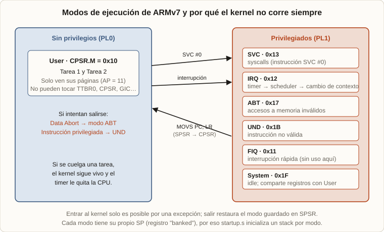
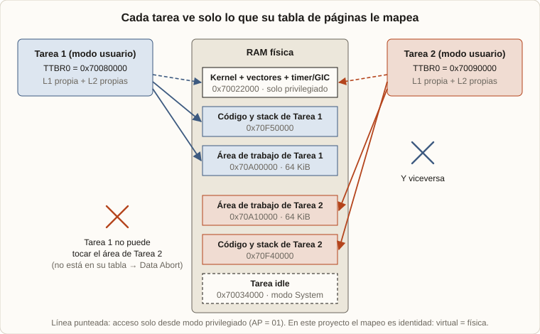
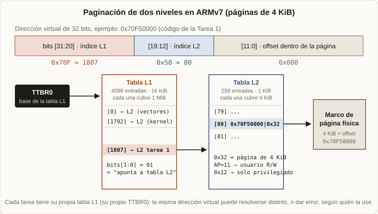
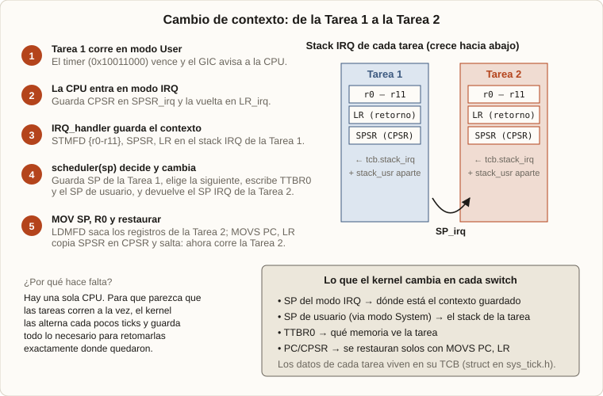
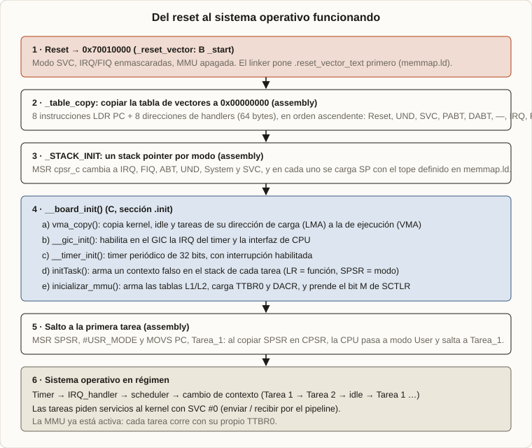

2025 · UTN FRBA · ARM Cortex-A8 · C y Assembly
Un sistema operativo desde cero: chocarse con la pared de la memoria
Cuando usás una computadora, una cosa se da por hecha: que la memoria funciona. Abrís un programa y tiene su espacio, abrís otro y también, y ninguno pisa al otro. No hay que hacer nada para que eso pase, y en casi todos los casos simplemente pasa.
Este proyecto hace lo contrario. La idea fue chocarse con esa pared: meterme en los distintos niveles de la memoria (física y virtual), en los niveles de privilegio del procesador y en el cambio de contexto, para entender cómo un sistema operativo consigue ejecutar varios programas al mismo tiempo sobre una sola CPU.
1. Qué construí
2. Qué problemas resuelve un sistema operativo
3. Quién puede hacer qué: los modos de ARM
4. Memoria física y memoria virtual
5. Paginación y el registro TTBR0
6. Compartir la CPU: el cambio de contexto
7. Pedirle cosas al kernel: syscalls
8. Del encendido al sistema funcionando
9. Cómo lo simulé y depuré
1. Qué construí
Un kernel mínimo para un procesador ARM Cortex-A8, escrito en C y Assembly, sin librerías de sistema ni un sistema operativo debajo. Corre sobre una simulación de la placa realview-pb-a8 (más detalles en la sección 9). Tiene:
- Tres tareas: Tarea 1, Tarea 2 y una tarea idle que espera con
wficuando no hay nada que hacer. - Un scheduler round-robin: cada tarea recibe la CPU unos pocos ticks del timer y después se la pasa a la siguiente.
- Memoria virtual con paginación de dos niveles: cada tarea tiene su propia tabla de páginas y solo ve su memoria.
- Modos de privilegio: las tareas corren en modo usuario y el kernel en modos privilegiados.
- Syscalls y una pequeña cola circular con la que las tareas se pasan datos.
Las tareas hacen algo simple a propósito. La Tarea 1 recorre su área de memoria escribiendo el patrón 0x55AA55AA / 0xAA55AA55 y le manda a la Tarea 2, por syscall, el índice que acaba de tocar. La Tarea 2 lo recibe y lo guarda en su propia área; si no llega nada, invierte el valor que había. No son tareas útiles: son una excusa para ejercitar la memoria, los privilegios y la comunicación entre procesos.
2. Qué problemas resuelve un sistema operativo
Un sistema operativo es el programa que administra los recursos de la máquina (la CPU, la memoria y los dispositivos) para que varios programas los compartan sin molestarse. Eso se reduce a tres problemas, y cada uno tiene su herramienta. Este texto los recorre en este orden:
| Problema | Herramienta | Sección |
|---|---|---|
| Que un programa no pueda romper al kernel ni a otro programa | Modos de privilegio + memoria virtual | 3, 4 y 5 |
| Que varios programas usen una sola CPU | Timer + scheduler + cambio de contexto | 6 |
| Que los programas usen el hardware sin acceder a él directamente | Syscalls | 7 |
Después, en la sección 8, se ve cómo arranca todo junto: qué se inicializa, en qué orden y por qué.
3. Quién puede hacer qué: los modos de ARM
Todo empieza por decidir quién tiene permiso para hacer qué. ARMv7 tiene siete modos de ejecución: uno solo sin privilegios (User) y seis privilegiados. Cada modo privilegiado atiende un tipo de evento y tiene su propio stack pointer, por eso el arranque configura un SP por modo.
| Modo | CPSR.M | Cuándo se usa acá |
|---|---|---|
| User | 0x10 | Tarea 1 y Tarea 2. |
| IRQ | 0x12 | Cada tick del timer: guarda el contexto y llama al scheduler. |
| SVC (Supervisor) | 0x13 | Syscalls (SVC #0) y modo en el que arranca la CPU. |
| Abort | 0x17 | Acceso a memoria inválido (por ejemplo, tocar una página que no está mapeada). |
| Undefined | 0x1B | Instrucción inexistente o privilegiada ejecutada sin permiso. |
| FIQ | 0x11 | Interrupción rápida; en este proyecto no se usa. |
| System | 0x1F | Privilegiado, pero comparte registros con User. La tarea idle corre acá y el kernel lo usa para leer y escribir el SP de usuario. |
¿Por qué no se usa siempre el modo kernel?
Porque un programa en modo privilegiado puede hacer cualquier cosa: cambiar de tabla de páginas, apagar la MMU, deshabilitar interrupciones, leer la memoria de otros. Si las tareas corrieran así, un solo error (un puntero mal calculado) podría corromper al kernel y tirar todo el sistema, y no habría aislamiento posible, porque cualquier tarea podría desactivarlo.
Con los programas en modo usuario, en cambio, cualquier intento de salirse de su espacio termina en una excepción que el kernel atiende, y el sistema sigue funcionando. Diferenciar los modos es lo que convierte a la memoria virtual en protección real y no solo en una traducción de direcciones.
¿Cómo se pasa de un modo a otro?
Un programa de usuario no puede elegir entrar al kernel: solo llega ahí por una excepción. Puede ser una interrupción (el timer), una syscall (SVC) o un error (acceso inválido, instrucción indefinida). La CPU guarda el estado anterior en SPSR, salta al código del kernel y, al terminar, MOVS PC, LR restaura el modo anterior. Lo único que ese programa controla es cuándo pide el servicio; lo que se ejecuta lo decide el kernel.

Así se ve en el handler de syscalls: entra guardando el contexto y sale con movs pc, lr, que restaura el modo usuario desde SPSR.
Extracto de core/handlers.s
SVC_handler:
stmfd sp!, {r1-r11, lr} // Guardo r1-r11 y lr
mrs r1, spsr
stmfd sp!, {r1} // Guardo SPSR
bl svc_table // Llama a tabla de syscalls con r0 y r7
ldmfd sp!, {r1} // Recupera SPSR
msr spsr_fsxc, r1
ldmfd sp!, {r1-r11, lr} // Recupera resto del contexto (r0 intacto)
movs pc, lr // Vuelve a modo usuarioYa sabemos quién puede ejecutar qué. Falta la otra mitad del aislamiento: qué memoria puede tocar cada uno.
4. Memoria física y memoria virtual
La memoria física es la RAM real, con direcciones que el hardware entiende (en esta placa, la RAM empieza en 0x70000000). La memoria virtual es la vista que tiene cada programa: direcciones que la MMU (Memory Management Unit) traduce a físicas usando tablas que arma el kernel.
¿Para qué sirve? Para tres cosas:
- Aislar: cada tarea tiene sus tablas y solo ve las páginas que le mapearon. Si intenta tocar otra, la MMU genera un Data Abort (el modo Abort de la sección anterior).
- Proteger al kernel: sus páginas se marcan como solo-privilegiado, así una tarea no puede leerlas ni modificarlas.
- Flexibilizar: el programa no necesita saber dónde está realmente en la RAM.

Aclaración: en esta versión el mapeo es de identidad (la dirección virtual es igual a la física). Lo que cambia entre tareas no es la traducción, sino qué páginas existen y con qué permisos en cada tabla. Es el primer paso; mapear una misma dirección virtual a distintas físicas es una evolución natural.
Queda ver cómo son esas tablas, quién las apunta y dónde se guardan los permisos.
5. Paginación y el registro TTBR0
La paginación divide la memoria en bloques fijos, las páginas (acá de 4 KiB), y traduce dirección por dirección con una tabla. Una tabla plana para 4 GiB de espacio de direcciones sería enorme, así que ARMv7 usa dos niveles:
- Tabla L1: 4096 entradas × 4 bytes = 16 KiB. Cada entrada cubre 1 MiB y apunta a una tabla L2.
- Tabla L2: 256 entradas × 4 bytes = 1 KiB. Cada entrada describe una página de 4 KiB.
La dirección virtual se corta en tres pedazos: los bits [31:20] eligen la entrada L1, los bits [19:12] la entrada L2, y los bits [11:0] son el desplazamiento dentro de la página. Por ejemplo, el código de la Tarea 1 está en 0x70F50000: índice L1 = 0x70F = 1807, índice L2 = 0x50 = 80.

¿Qué es TTBR0?
TTBR0 (Translation Table Base Register 0) es el registro del coprocesador CP15 que guarda la dirección física de la tabla L1 activa. Es el punto de partida de toda traducción: la MMU lee ahí para saber qué tabla usar. Debe estar alineado a 16 KiB, por eso en el linker script hay un ALIGN(16384). Se escribe así:
MCR p15, 0, r0, c2, c0, 0 @ TTBR0 = r0¿Por qué hay un TTBR0 distinto por tarea?
Porque cambiar de tarea es cambiar de tabla, y así cada una ve un espacio de direcciones distinto (0x70080000, 0x70090000, 0x700A0000). Un detalle importante: en este proyecto hay un TTBR0 por tarea, no uno por nivel de privilegio. Los privilegios se controlan dentro de cada entrada, con los bits AP:
| Descriptor L2 | AP[1:0] | Significado |
|---|---|---|
paddr | 0x12 | 01 | Solo modos privilegiados pueden leer y escribir. Se usa para kernel, vectores, timer, GIC y stacks IRQ. |
paddr | 0x32 | 11 | Lectura y escritura también desde modo usuario. Se usa para código, datos y stack de usuario de cada tarea. |
El kernel está mapeado (como solo-privilegiado) dentro de la tabla de todas las tareas. Así, cuando una tarea hace una syscall o llega una interrupción, la CPU ya puede ejecutar el código del kernel sin cambiar de tabla. Además, el registro DACR se carga con 0x55555555: los 16 dominios en modo "cliente", que significa "respetar los bits AP de cada página".
En sistemas más grandes existe también TTBR1: el hardware usa TTBR0 para las direcciones bajas (procesos de usuario) y TTBR1 para las altas (kernel), de modo que solo se cambia TTBR0 al cambiar de proceso. Este proyecto no usa esa división.
Cómo se implementa en el código
La función paginacion() (en proc/mmu.c) recibe la tarea, la dirección física, la virtual, la cantidad de páginas y si son de usuario o privilegiadas. Por cada página calcula los índices, deja apuntando la entrada L1 a la tabla L2 y escribe la entrada L2 (extracto de paginacion(), con ... donde recorté validaciones):
uint32_t l1_index = vaddr >> 20; // Bits [31:20]
uint32_t l2_index = (vaddr >> 12) & 0xFF; // Bits [19:12]
...
l1_table[l1_index] = ((uint32_t)&l2_table[0] & 0xFFFFFC00) | 0x1;
switch (flag)
{
case PRIVILEGE:
l2_table[l2_index] = (paddr & 0xFFFFF000) | 0x12;
break;
case USER:
l2_table[l2_index] = (paddr & 0xFFFFF000) | 0x32;
break;
}init_ttbr0() arma las tres tablas (Tarea 1, Tarea 2 e idle). Y inicializar_mmu() termina el trabajo: carga TTBR0, carga DACR y enciende el bit 0 (M) del registro de control SCTLR. Mientras se activa la MMU el procesador sigue ejecutando instrucciones, por eso el código de arranque está mapeado con identidad: la instrucción siguiente tiene que seguir estando en la misma dirección.
Así se arma el espacio de direcciones de la Tarea 1: el kernel es privilegiado y todo lo suyo es de usuario. Fijate que su stack de usuario y su stack de IRQ están en páginas distintas, con permisos distintos.
Extracto de init_ttbr0() en proc/mmu.c
paginacion(TASK1, F_ADDR_KERNEL, V_ADDR_KERNEL, CANT_KERNEL, PRIVILEGE);
paginacion(TASK1, F_ADDR_TASK1_SPACE_WORK, V_ADDR_TASK1_SPACE_WORK, SPACE_WORK_TASK1, USER);
paginacion(TASK1, F_ADDR_TASK1, V_ADDR_TASK1, CANT_TASK1, USER);
paginacion(TASK1, F_STACK_TASK1_USR, V_STACK_TASK1_USR, STACK_SIZE_TASK1, USER);
paginacion(TASK1, F_STACK_TASK1_PRI, V_STACK_TASK1_PRI, STACK_SIZE_TASK1, PRIVILEGE);Y estas son las tres instrucciones que activan todo. Por un lado se carga TTBR0 con la tabla de la Tarea 1 y DACR con 0x55555555 (todos los dominios en modo cliente). Después se lee SCTLR, se prende el bit 0 (M) y se vuelve a escribir.
Extracto de inicializar_mmu() en proc/mmu.c
asm volatile(
"LDR r0, =0x70080000 \n\t"
"MCR p15, 0, r0, c2, c0, 0\n\t" // TTBR0
"LDR r0, =0x55555555 \n\t"
"MCR p15, 0, r0, c3, c0, 0\n\t" // DACR
"MRC p15, 0, r1, c1, c0, 0\n\t" // lee SCTLR
"ORR r1, r1, #1 \n\t" // bit 0: MMU enable
"MCR p15, 0, r1, c1, c0, 0\n\t" // escribe SCTLR
:
:
: "r0", "r1", "memory"
);Cada tabla L1 ocupa 16 KiB y debe estar alineada a 16 KiB. Esa restricción está en el linker script, y el TTBR0 de cada tarea se calcula sumando un desplazamiento fijo a la primera:
Extracto de memmap.ld y de inc/mmu.h
/* memmap.ld */
. = _TTBR0_TAREA_1;
.ttbr0_tarea_1 (NOLOAD):
{
. = ALIGN(16384);
__ttbr0_tarea_1_start__ = .;
. = . + 0x4000;
__ttbr0_tarea_1_end__ = .;
} > public_ram
/* mmu.h */
#define TTBR0_TASK1 0x70080000
#define TTBR0_TASK2 0x70090000
#define TTBR0_IDLE 0x700A0000
#define TTBR0_OFFSET 0x10000
#define MY_TTBR0(n) ((uint32_t*)(TTBR0_TASK1 + ((n) * TTBR0_OFFSET)))Con memoria protegida y privilegios definidos, el sistema ya puede aislar tareas. Ahora hay que hacer que se turnen.
6. Compartir la CPU: el cambio de contexto
Hay una sola CPU. Para que parezca que las tareas corren a la vez, el kernel las alterna cada pocos ticks del timer. El contexto de una tarea es todo lo necesario para retomarla exactamente donde quedó: los registros r0–r12, el PC, el CPSR y su stack. El cambio de contexto (switch context) es guardar el de la tarea que sale y cargar el de la que entra. Sin eso no habría multitarea: cada tarea sería un programa que se apodera de la CPU para siempre.
La pieza que lo dispara es el timer: se configura en modo periódico y cada vez que vence avisa al controlador de interrupciones (GIC), que interrumpe a la CPU. Es la excepción IRQ de la sección 3, y es lo que evita que una tarea acapare el procesador.
Cómo se hace, paso a paso
- El timer vence y la CPU entra en modo IRQ, guardando el
CPSRenSPSR_irqy la dirección de retorno enLR_irq. IRQ_handler(assembly) apila en el stack IRQ de la tarea actual:r0–r11,SPSRyLR.- Llama a
kernel_handler_irq(sp), que atiende el timer y llama ascheduler(sp). - El scheduler, cuando se cumplió el tiempo de la tarea: guarda su SP IRQ y su SP de usuario en su TCB (Task Control Block), pasa a la siguiente, escribe su TTBR0, restaura su SP de usuario y devuelve el SP IRQ de la nueva tarea.
- De vuelta en el handler,
mov sp, r0cambia al stack de la tarea nueva y se desapila todo. Conmovs pc, lrla CPU restaura elCPSRdesdeSPSRy salta alPCguardado: ya está corriendo la otra tarea.

El handler de IRQ es Assembly. Lo primero que hace, sub lr, lr, #4, corrige la dirección de retorno: en una interrupción, LR apunta 4 bytes después de la instrucción interrumpida. Después guarda el contexto, le pasa el SP actual al código en C y vuelve con el SP que ese código le devuelve.
Extracto de core/handlers.s
IRQ_handler:
sub lr, lr, #4 // Ajusto el valor de retorno
stmfd sp!, {r0-r11}
mrs r1, spsr
stmfd sp!, {r1, lr}
mov r0, sp
bl kernel_handler_irq
mov sp, r0
ldmfd sp!, {r1, lr}
msr spsr_fsxc, r1
ldmfd sp!, {r0-r11}
movs pc, lrY esta es la decisión del scheduler. Cuando a la tarea actual se le acaban los ticks, guarda sus dos SP en su TCB, avanza a la siguiente, escribe su TTBR0 y restaura su SP de usuario. Lo que devuelve es el SP de IRQ de la tarea nueva.
Extracto de scheduler() en sys/sys_tick.c
if (sche.tickCount >= tasks[sche.currentTask]->ticks)
{
// Guardo como variaron los sp
tasks[sche.currentTask]->stack_usr = read_sp_usr();
tasks[sche.currentTask]->stack_irq = actualSP;
// Cambiar a la siguiente tarea
sche.currentTask = (sche.currentTask + 1) % 3;
asm volatile (
"MCR p15, 0, %0, c2, c0, 0\n" // Escribe nuevo_ttbr0 en TTBR0
:: "r" (MY_TTBR0(sche.currentTask))
: "memory"
);
newSP = tasks[sche.currentTask]->stack_irq;
write_sp_usr(tasks[sche.currentTask]->stack_usr); // Cambia el SP del modo Sys y User
sche.tickCount = 0;
}La primera vez que una tarea se ejecuta no tiene un contexto guardado. initTask() lo fabrica a mano: deja en su stack IRQ un marco falso con el LR apuntando al inicio de la función y el SPSR con el modo correcto (usuario para las tareas, System para idle). Al "volver" de una interrupción que nunca ocurrió, la CPU entra a la tarea por primera vez.
Extracto de initTask() en sys/sys_tick.c
for (int i = 0; i < 3; i++) {
TCB* t = arr[i];
t->stack_irq = irq_tops[i] - OFFSET;
t->stack_usr = usr_tops[i];
uint32_t *aux = (uint32_t*)t->stack_irq;
*(aux + OFFSET_LR) = (uint32_t)funcs[i]; // "vuelvo" al inicio de la tarea
if (i == IDLE)
*(aux + OFFSET_SPSR) = MASK_SYS_CPSR; // idle: modo System
else
*(aux + OFFSET_SPSR) = MASK_USER_CPSR; // tareas: modo usuario
}Las tareas ya se turnan y están aisladas. Pero a veces necesitan algo que solo el kernel puede dar.
7. Pedirle cosas al kernel: syscalls
Una tarea en modo usuario no puede tocar el hardware ni las estructuras del kernel. Cuando necesita un servicio, ejecuta la instrucción SVC #0: es una excepción provocada a propósito, que lleva a la CPU a modo Supervisor. El número de servicio va en r7 y el argumento en r0.
// En la Tarea 1 (modo usuario)
register uint32_t r0 __asm__("r0") = val; // dato a enviar
register uint32_t r7 __asm__("r7") = 0; // 0 = SEND, 1 = RECV
asm volatile ("svc #0" : : "r"(r0), "r"(r7) : "memory");SVC_handler guarda los registros, llama a svc_table, que despacha según r7, y vuelve con movs pc, lr, que además devuelve el modo usuario. El resultado vuelve en r0.
Extracto de svc_table() en sys/sys_tick.c
uint32_t svc_table(void)
{
register uint32_t r0 __asm__("r0"); // argumento
register uint32_t r7 __asm__("r7"); // syscall id
switch (r7)
{
case SEND:
return syscall_pipeline_enqueue(r0);
case RECV:
return syscall_pipeline_dequeue();
default:
return 0xFFFFFFFF; // syscall inválida
}
}Con estas dos syscalls se arma un canal entre tareas: una cola circular de 16 posiciones que vive en memoria del kernel. La Tarea 1 encola (SEND) el índice que tocó, la Tarea 2 desencola (RECV). Las tareas nunca se ven la memoria entre sí: se comunican solo a través del kernel, y ese es justo el punto de haberlas aislado.
Con todas las piezas conocidas, se puede seguir el camino completo desde que se enciende el procesador.
8. Del encendido al sistema funcionando
¿Desde qué dirección empieza a ejecutar?
En un Cortex-A real, apenas sale del reset el procesador toma el vector de reset en 0x00000000 (o 0xFFFF0000 si están activados los vectores altos), en modo Supervisor, con las interrupciones enmascaradas y la MMU apagada. En este proyecto, con QEMU, el binario se carga en 0x70010000, el ENTRY del linker script es _reset_vector, y ahí hay una única instrucción: B _start.
La tabla de vectores, y por qué es ascendente
Las excepciones de la sección 3 tienen que saber adónde saltar. Cuando ocurre una, el procesador no busca una dirección en ningún lado: salta a una dirección fija, la base de vectores más un desplazamiento que depende del tipo de excepción. Ese orden lo define el hardware, en direcciones crecientes de a 4 bytes:
| Offset | Excepción | Offset | Excepción |
|---|---|---|---|
0x00 | Reset | 0x10 | Data Abort |
0x04 | Undefined | 0x14 | Reservado |
0x08 | SVC | 0x18 | IRQ |
0x0C | Prefetch Abort | 0x1C | FIQ |
Cada posición contiene una sola instrucción, así que se usa LDR PC, dirección_del_handler y las direcciones van en una tabla de constantes pegada a continuación. startup.s arma esa tabla y un bucle la copia con post-incremento (LDR R3,[R1],#4 / STR R3,[R0],#4) hacia 0x00000000, que es donde el hardware la va a buscar. Por eso esa zona está mapeada (16 páginas, solo-privilegiadas) en todas las tablas de páginas. Como esas instrucciones usan direccionamiento relativo al PC, funcionan igual una vez copiadas.
Extracto de core/startup.s
_table_start:
LDR PC, add_reset_vector // 0x00
LDR PC, add_UND_handler // 0x04
LDR PC, add_SVC_handler // 0x08
LDR PC, add_PREFETCH_handler // 0x0C
LDR PC, add_ABT_handler // 0x10
LDR PC, add_reserved // 0x14
LDR PC, add_IRQ_handler // 0x18
LDR PC, add_FIQ_handler // 0x1C
add_reset_vector: .word _reset_vector
add_UND_handler: .word UND_handler
add_SVC_handler: .word SVC_handler
...
_table_copy:
MOV R0, #0 // destino: 0x00000000
LDR R1,=_table_start
LDR R2,=_start
_table_loop:
LDR R3, [R1],#4 // leo y avanzo 4 bytes
STR R3, [R0],#4 // escribo y avanzo 4 bytes
CMP R1, R2
BNE _table_loopLo contrario pasa con los stacks: crecen hacia direcciones menores (STMFD = Full Descending), por eso en el linker se define el tope de cada uno.
Para inicializar un stack por modo, el arranque cambia de modo escribiendo CPSR y carga el SP de ese modo. Se enmascaran IRQ y FIQ (I_BIT | F_BIT) mientras dura la inicialización:
Extracto de core/startup.s
//IRQ
MSR cpsr_c, #(IRQ_MODE | I_BIT | F_BIT)
LDR SP, =__irq_tarea1_top__
//FIQ
MSR cpsr_c, #(FIQ_MODE | I_BIT | F_BIT)
LDR SP, =__fiq_stack_top__
...
//Supervisor
MSR cpsr_c, #(SVC_MODE | I_BIT | F_BIT)
LDR SP, =__svc_stack_top__El flujo completo

- Reset en
0x70010000:B _start. - Assembly: se copia la tabla de vectores a
0x0. - Assembly: se inicializa un SP por modo (IRQ, FIQ, Abort, Undefined, System, Supervisor) cambiando el modo con
MSR cpsr_c. - C,
__board_init():vma_copy()copia cada sección de donde el linker la guardó (LMA) a donde va a correr (VMA), simulando cargar desde flash a RAM; inicializa el GIC y el timer;initTask()fabrica los contextos iniciales;inicializar_mmu()arma las tablas y enciende la MMU. - Assembly:
MSR SPSR, #USR_MODEyMOVS PC, Tarea_1: la CPU entra en modo usuario y arranca la primera tarea. - Régimen: cada tick del timer dispara el scheduler; las tareas usan
SVCpara comunicarse.
El último tramo, en código. Primero se llama a __board_init(), y después el salto a la primera tarea: SPSR se deja en modo usuario y MOVS PC lo copia en CPSR mientras salta.
Extractos de proc/board_init.c y core/startup.s
/* board_init.c */
vma_copy(); // Copia las secciones de LMA a VMA
__gic_init();
__timer_init();
initTask();
inicializar_mmu(); // inicializa la mmu
/* startup.s */
LDR R10, =__board_init
MOV LR, PC // Almaceno la dirrecion de retorno
BX R10
MSR SPSR_cxsf, #USR_MODE // Entrás al modo usuario
LDR R10, =Tarea_1
MOVS PC, R109. Cómo lo simulé y depuré
No lo corrí en una placa real: todo el sistema corre en una simulación de un microprocesador ARM Cortex-A8 dentro de mi computadora, con QEMU emulando la placa realview-pb-a8 (CPU, RAM, timer y controlador de interrupciones GIC incluidos).
Para ver qué pasaba por dentro usé el depurador GDB conectado a QEMU y, encima, la interfaz gráfica DDD. QEMU se lanza en pausa y abre un servidor GDB; desde DDD se ejecuta paso a paso, se ponen breakpoints y se inspeccionan los registros y la memoria. Eso fue clave para un proyecto así, porque los errores no dan mensajes: se ve cómo cambia CPSR al entrar en modo IRQ, qué vale cada SP, o si el TTBR0 apunta a la tabla que corresponde después de un cambio de contexto.
make # compila con arm-none-eabi-gcc
make debug # QEMU en pausa, esperando a GDB (puerto 2159)
ddd --debugger gdb-multiarch obj/ejer3.elfEl Makefile también genera el mapa de memoria del linker y el listado desensamblado, que fueron útiles para comprobar que cada sección quedaba en la dirección esperada.
Todo el código, con el Makefile para compilar y correr en QEMU, está en Sistem-Operativo-ByNico (carpeta sistema-operativo-arm).